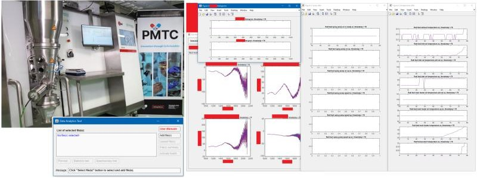
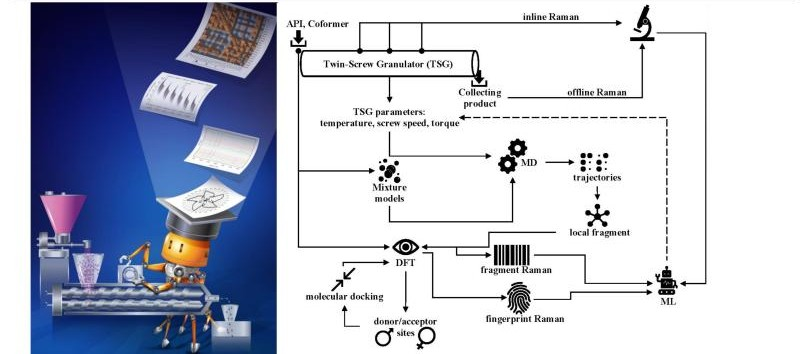
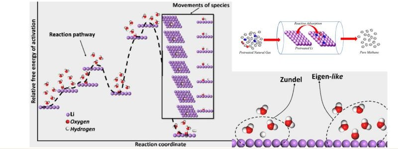

Simulation Module Development Lead
Workplace
Aurel Systems Inc., Vancouver, BC, Canada
Timeline
2026: Jan - Present
Project
Development and implementation of unit operation modules for Aurel's Process Simulation Software: CADSIM Plus, with an initial focus on mineral processing applications and process digital twin technologies.
Project Goal
Contributing to the advancement of Aurel's Process Simulation Software: CADSIM Plus by creating reliable and scalable simulation modules that support process improvement, operational efficiency, and digital representation of industrial systems.
Tasks Performed
- Developing and implementing unit operation simulation modules for CADSIM® Plus, supporting modeling of mineral processing systems and industrial processes.
- Expanding process simulation capabilities to improve process understanding, optimization, and operational performance.
- Supporting development of process digital twin components to enable enhanced monitoring and predictive analysis.
- Collaborating with engineering teams to support process improvement initiatives through simulation-driven insights.
- Contributing to delivery of practical solutions to process improvement and operation aligned with Aurel’s objectives.
Materials Handling
Workplace
UBC Norman B. Keevil Institute of Mining Engineering, Vancouver, Canada.
Timeline
2025 Sept. - 2025 Dec.
Tasks Performed
- Worked with Dr. Ali Kuyuk as Teaching Assistant for the course Materials Handling.
Mineral Process Engineer
Workplace
UBC Norman B. Keevil Institute of Mining Engineering, Vancouver, Canada.
Timeline
2025 Sept. - 2025 Dec.
Tasks Performed
- Worked with Dr. Scott Dunbar as Teaching Assistant for Modelling and Simulation.
- Contributed to trainings on methods for determining the behaviour of large-scale industrial systems and their application to the design and analysis of such systems.
Mineral Process Engineer
Workplace
UBC Norman B. Keevil Institute of Mining Engineering, Vancouver, Canada.
Timeline
2024 Sept. - 2024 Dec.
Tasks Performed
- Worked with Dr. Sanja Miskovic as Teaching Assistant for Modelling and Simulation.
- Contributed to trainings on methods for determining the behaviour of large-scale industrial systems and their application to the design and analysis of such systems.
Canada West Coordinator
Workplace
Marie Curie Alumni Association, North America Chapter, Canada.
Timeline
2023 Sept. - 2024 Sept.
Tasks Performed
- Coordinated MCAA North America outreach activities in Canada west coast for a community of over 300 members.
Mineral Process Engineer: Process Control (Teaching Assistant)
Workplace
UBC Norman B. Keevil Institute of Mining Engineering, Canada.
with Dr. Ilija Miskovic.
Timeline
2023 Sept. - 2023 Dec.
Tasks Performed
- Contributed to trainings on methods for automatic control theory, PID control, Laplace and z-transforms, loop tuning, frequency response, stability analysis, control strategies in flotation, comminution, dewatering, reagent and bin/sump levels, automated load-haul-dump and drilling equipment, instrumentation and soft sensors.
Mineral Process Engineer
Workplace
UBC Norman B. Keevil Institute of Mining Engineering, Vancouver, Canada.
Timeline
2023 Jan. - 2025 Dec.
Project
Microwave Assisted Drying of Minerals, with Dr. Ali G. Madiseh.
Project Goal
Collaborated with a local mining company, under Mitacs Accelerate Internship, to electrify kiln drying processes by integrating microwave-based heating systems aimed at reducing fossil fuel dependence (12.25 million cubic meters of natural gas), lowering economic expenses (e.g., $2.08 million carbon tax), and minimizing greenhouse gas emissions (e.g., 26,000 tons of CO2e annually).
Tasks Performed
- Measured and analyzed thermophysical and electromagnetic properties of minerals subjected to microwave heating, providing essential data for system design and process optimization.
- Developed and validated Finite Element Models (FEM) of coupled electromagnetic heating in COMSOL Multiphysics to guide the design and construction of a continuous on-site drying line.
- Successfully compiled COMSOL Multiphysics on UBC Sockeye HPC systems, ensuring proper file access, MPI fork setup, and security configurations to facilitate large-scale simulations.
- Formulated atomistic and molecular modeling protocols to predict the electromagnetic properties of multicomponent materials under alternating current (AC), enhancing material design for efficient microwave heating.
- Performed Density Functional Theory (DFT) calculations and developed custom Machine Learning (ML) interatomic potentials for molecular dynamics simulations; modified LAMMPS source code (C++) for high-fidelity simulations of material behaviors under microwave exposure.
- Created Bash and Python scripts for post-processing of simulation results, data visualization, and executive analytics to support project planning, delivery, and presentations to stakeholders.
Chemical Process Engineer
Workplace
UBC Chemical and Biological Engineering Department, University of British Columbia (UBC), Canada
Timeline
2022: Sept. - Dec.
Tasks Performed
- with Dr. Simcha Srebnik as as Teaching Assistant for Modelling and Optimization in Chemical Engineering.
- Skilled in modeling and optimizing industrial chemical processes, with a focus on simulating chemical reactors, emphasizing heterogeneous systems in Aspen environments.
- Applied optimization techniques within Aspen platforms to enhance process performance and efficiency.
- Designed and simulated crude oil distillation processes using Aspen HYSYS.
- Implemented dynamic simulation and control strategies to model real-time process behavior in HYSYS.
- Created process flowsheets for specialty chemicals and reactions using Aspen.
- Wrote/modified FORTRAN subroutines in Aspen for ad-hoc units / calculations.
Chemical Engineer
Workplace
UBC Chemical and Biological Engineering Department, University of British Columbia (UBC), Canada
Timeline
2022: May - Dec.
Project
Nanocavitation and its Mitigation in Fabricating Artificial Trees, with Dr. Simcha Srebnik.
Project Goal
Investigated nanoscale water flow mechanisms to reduce nanobubble formation and ensure stable, uninterrupted transport in nanoporous channels—critical for enhancing efficiency in advanced evaporative cooling systems.
Tasks Performed
- Conducted an in-depth literature review to establish design principles for self-driven water transport at the nanoscale.
- Developed algorithms to quantitatively assess the impact of surface hydrophilicity on nanobubble nucleation and stability.
- Created custom computational routines for high-throughput molecular dynamics (MD) simulations using LAMMPS, tailored for complex fluid-surface interactions.
- Compiled and optimized LAMMPS on UBC's Sockeye HPC environment for scalable, in-house simulation workflows.
- Extended LAMMPS functionality with custom C++ modules to meet unique research needs in nanoscale flow modeling.
- Implemented post-processing scripts in Python for automated extraction and visualization of simulation results, including pressure profiles, density distributions, and flow characteristics.
- Collaborated with a multidisciplinary team to validate simulation results against theoretical models and experimental data, enhancing cross-domain communication and interpretation.

Chemical Process Engineer
Workplace
Pharmaceutical Manufacturing Technology Centre (PMTC), Bernal Institute, University of Limerick, Ireland
Timeline
2022: Feb - May
Project
Fluid Bed Spray Dryer Process Monitoring and Engineering, with Dr. Marcus O'Mahony.
Project Goal
Designed and implemented a data-driven graphical user interface for real-time monitoring and optimization of a fluid bed spray drying process by integrating in-line/offline sensor data streams and advanced analytics into an interactive platform.
Tasks Performed
- Developed an interactive graphical user interface (GUI) in MATLAB for real-time data visualization and diagnostics, supporting both in-line and offline sensor data integration.
- Integrated and processed diverse sensor types including CCD camera feeds (image-based analysis), NIR sensors (unlabeled time-series), Raman spectroscopy probes (localized unstructured signals), and valve states (binary control signals).
- Performed extensive data preprocessing and cleansing to handle high-dimensional and heterogeneous datasets with missing values and sensor noise.
- Applied pattern recognition and signal analysis techniques to identify operational trends, detect anomalies, and support process optimization.
- Designed pipelines for real-time data ingestion and synchronization from multiple sensor sources, ensuring temporal alignment and reliable analytics under dynamic plant conditions.
- Collaborated with process engineers and control specialists to translate sensor insights into actionable process improvements and control strategies.

Marie Sklodowska-Curie Postdoctoral Fellow
Workplace
Synthesis and Solid State Pharmaceutical Centre (SSPC), Bernal Institute, University of Limerick, Ireland
Timeline
2019: Oct. - 2022: Feb.
Project
Continueous Cocrystalization via Hot Melt Extrusion in Phamaceuticals, with Dr. Gavin Walker.
Project Goal
Developed a data-driven digital twin framework to address low-yield challenges in continuous crystallization, aiming to enhance product quality, optimize production, and reduce waste and operational costs in pharmaceutical manufacturing.
Tasks Performed
- Conducted detailed root-cause analysis of unit operations to identify inefficiencies affecting yield and product purity in continuous crystallization systems.
- Evaluated the influence of critical process parameters—temperature, residence time, screw configuration, and rotation speed—on crystallization outcomes, using both experimental data and simulation insights.
- Designed and refined process strategies to maximize desired product formation, suppress by-product generation, and reduce procurement and disposal costs.
- Built a digital twin using advanced data analytics and implemented a machine learning-based process controller, integrating both real-time (in-line) & historical (offline) sensor data streams-Raman spectroscopy.
- Utilized Density Functional Theory (DFT) and molecular dynamics (MD) simulations to analyze molecular interactions, guiding optimal cocrystal formation pathways and identifying key process descriptors.
- Integrated Raman spectrometer* data into a live control system, enabling real-time feedback and control within a continuous manufacturing environment through predictive ML models.

AI & ML in Material Sciences
Workplace
Skolkovo Institute of Science and Technology (SkolTech), Russia
Timeline
2018: May - Oct.
Project
Machine Learning Interatomic Potentials for Materials Discovery, with Dr. Alexander Shapeev.
Project Goal
Aimed to expedite the discovery and characterization of hard materials for use in high-performance environments—such as aerospace, automotive, mining, and manufacturing—by developing and deploying ML-driven interatomic potentials for predictive modeling.
Tasks Performed
- Assessed candidate hard materials for industrial applications, focusing on performance under mechanical stress and durability in extreme conditions.
- Conducted nanoindentation research to evaluate mechanical properties such as hardness and elastic modulus of synthesized materials.
- Developed validation models to discuss experimental results with simulation predictions, extracting insights into material failure modes and defect behavior.
- Implemented and trained Machine Learning Interatomic Potentials (MLIPs) using active learning strategies to improve accuracy with minimal data.
- Automated molecular dynamics (MD) simulations using LAMMPS and density functional theory (DFT) calculations using VASP for large-scale material screening across multiple HPC clusters.
- Wrote modular and efficient code in Python and Bash, managing environments and version control using Git.

Process Engineer
Workplace
School of Energy and Environment, City University of Hong Kong, Hong Kong
Timeline
2017 Nov. - 2018 May
Project
Design of Adorptive Systems for Direct Gas Capture and Separation, with Dr. Jin Shang.
Project Goal
Developed a novel process for the direct capture, separation, and solid-state storage of nitrogen and carbon dioxide gases under ambient conditions using moist lithium as a reactive adsorbent, with an emphasis on circular material recovery for sustainable gas handling and sequestration.
Tasks Performed
- Designed and optimized gas capture protocols for ambient-condition adsorption of nitrogen and carbon dioxide on moist lithium, enabling safe and efficient conversion into solid-state lithium nitride for storage and transport.
- Applied principles of reaction engineering and separation to evaluate process efficiency, yield, and purity of captured products.
- Conducted Density Functional Theory (DFT) calculations to map reaction pathways between lithium and target gases, identifying favorable thermodynamic and kinetic conditions.
- Developed microkinetic and kinetic Monte Carlo models to simulate reaction dynamics and upscale lab-scale findings for process-scale feasibility.
- Demonstrated on-demand recovery of nitrogen and lithium through electrochemical regeneration, showcasing material circularity and long-term process sustainability.

Visiting Researcher
Workplace
Institute of Physics & Beijing National Lab for Condensed Matter Physics, Chinese Academy of Sciences, Beijing, China
Timeline
2017: Sept. - Nov.
Project
with Dr. Carlos-Andres Palma.
Tasks Performed
- Gained hands-on expertise in CHARMM for (bio)molecular modeling, focusing on simulation and analysis of organic and biological matter at the atomic level.
- Developed custom tools in Fortran and Python for simulation pre-processing and post-analysis, including data parsers, Fourier transforms, and specialized routines for trajectory and energy analysis.
Chemical Engineer: Water Quality Monitoring and Remedition (Research Assistant)
Workplace
Baqiyatallah University of Medical Sciences, Tehran, Iran.
under Iran National Science Foundation (INSF), with Dr. Ramezan Ali Taheri.
Timeline
2015: Jan. - July
Tasks Performed
- Thoroughly examined presence of biologically active matters in hospitals wastewater effluents.
- Inspected wastewater effluent from hospital sewage to remove biologically active materials, hormones, due to their wide use in patient treatments.
- Built and performed high-throughput screening of 1k polymers for common estrogen.
- Identified relevant pairs and determined the removal capacity and routs accordingly.
Research Collaborator
Workplace
Islamic Azad University, Tehran, Iran.
under Young Researchers and Elite Club.
Timeline
2014: Sept. - 2017: Sept.
Tasks Performed
- Managed diverse portfolios of research and development projects, ensuring timely delivery, quality outputs, and cross-disciplinary collaboration.
- Authored technical proposals, project schedules, and successfully acquired research funding for innovative environmental and industrial process solutions.
- Directed maintaining high performance across the lifecycle of multiple concurrent projects.
Sample Projects
- On-site detection and monitoring of pollutants in water and wastewater streams via polymeric passive samplers.
- Translated dilation to attenuated total reflectance Fourier-transform infrared spectroscopy (FTIR-ATR) of polycarbonate, poly (vinyl acetate), and poly (ether urethane) induced by acetonitrile.
- Removal mechanism of heavy metal ions (Pb, Cu, Cd, Zn, and Ni) by using lignin as adsorbent.
- Direct air capture and storage of carbon dioxide (CO2) on biomass and polymers at ambient conditions trough novel 'CO2–water–biomass' network enabling adsorption of 5–56 grams of CO2 per gram of biomass.
- Developed a detailed coated paper process model including convection, conduction, and radiation heat transfer in order to pave routes for optimization of industrial process through adjustments made to the air humidity, belt velocity, temperatures, as well as the distance between drying surface and the radiation heat source.
- Supercritical fluid extraction and purification of high end-value products (drugs and dyes) via supercritical carbon dioxide.
Chemical / Process Engineer (Summer Internship)
Workplace
Research Institute of Petroleum Industry (RIPI), Iran.
Timeline
2011: July - Aug.
Project
Design of Separation Systems for Ethane and Methane, with Dr. Nasim Tahouni.
Project Goal
Completed a process engineering internship focused on the simulation and optimization of a gas separation unit targeting high-purity ethane and methane recovery, integrating both technical design and economic analysis using industry-standard tools.
Tasks Performed
- Designed, simulated, and optimized a separation process in Aspen HYSYS, achieving efficient separation of ethane and methane under various operating conditions.
- Developed comprehensive Process Flow Diagrams (PFDs) to visualize and document the system configuration, material and energy balances, and process controls.
- Performed equipment sizing and selection for distillation columns, heat exchangers, compressors, and separators based on simulated process data and vendor specifications.
- Conducted cost analysis, including capital expenditure (CAPEX), operating expenditure (OPEX), and utility consumption, to assess economic feasibility and guide procurement strategies.
- Applied exergy analysis and pinch analysis to identify thermodynamic inefficiencies and optimize energy integration, improving process sustainability and reducing waste heat.
- Evaluated and compared equipment procurement options using technical and economic criteria to support decision-making for pilot-scale implementation.

Scientific Computing with MATLAB and C++ (Teaching Assistant)
Workplace
University of Tehran, Iran.
with Dr. Mohammad Ali Pourpak.
Timeline
2009 - 2011
Tasks Performed
- Developed custom numerical algorithms in MATLAB and C++ to solve complex ordinary and partial differential equations (ODEs/PDEs), and implemented optimization routines for scientific and engineering applications.
- Applied advanced computational techniques for modeling physical systems, performing parameter estimation, and solving multi-variable optimization problems with a focus on accuracy, efficiency, and scalability.